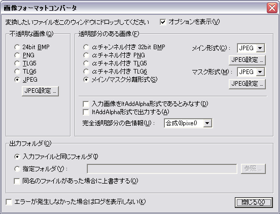

Conversion can be done by dropping the file you want to convert on the image format converter window. You can also drop multiple files.
You can specify different formats for opaque images and images with transparency.
The term "opaque image" here refers to an image in which the entire image is completely opaque (for example, a background image used in KAG). An "image with transparency" is an image that has a transparent area (foreground image such as used in KAG).
Even if the image format has equivalent information, if all pixels of the image are completely opaque as a result, it is treated as an "opaque image".
After the conversion is completed, a log will be displayed to confirm whether the conversion of each file was successful or an error occurred.
The following is a description of the screen.

When executed, the above screen is displayed.
- Show options
- When checked, the following settings are displayed. When unchecked, the window will only be at the top, and will be narrow and wide. You can make the window compact if you do not need to set options.
- "Opaque image-24bit BMP"
- Select 24bit BMP as the output format for opaque images.
- "Opaque image-PNG"
- Select PNG as the output format for opaque images.
- "Opaque image-TLG5"
- Select TLG5 as the output format for opaque images.
- "Opaque image-TLG6"
- Select TLG6 as the output format for opaque images.
- "Opaque image-JPEG"
- Select JPEG as the output format for opaque images.
- "Opaque images-JPEG options ..."
- Select the JPEG compression quality when JPEG is selected as the output format for opaque images.
- "Image with transparency-32bit BMP (Main + Mask)"
- Select 32bit BMP as the output format for images with transparency information.
- "Image with transparency-PNG with alpha channel (main + mask)"
- Select PNG with alpha channel as output format for images with transparency information.
- "Image with transparency-TLG5 with alpha channel (main + mask)"
- Select TLG5 with alpha channel as the output format for images with transparency information.
- "Image with transparency-TLG6 with alpha channel (main + mask)"
- Select TLG6 with alpha channel as the output format for images with transparency information.
- "Images with transparency-Main / Mask separation format"
- Specify the main / mask separation format as the output format of the image with transparency information. Select below what to use for the main / mask. In the case of JPEG, you can select the JPEG compression quality by clicking the "JPEG Option" button.
- "Image with transparency-considers input image to be in ltAddAlpha format"
- If this option is checked, the input image will be considered to be in ltAddAlpha format, that is, an additive alpha compositing format suitable for display by specifying ltAddAlpha in the Kirikiri's Layer.type property. The input image formats affected by this option are BMP, PNG, Main / Mask Separation format, PSD format is not affected.
If this option is not checked, the input image is assumed to be in ltAlpha format. Most graphics software output formats and PNG specifications are in ltAlpha format, so you should not normally check this option.
If this option is unchecked and "Export in ltAddAlpha format" is checked, the image format converter will convert from ltAlpha format to ltAddAlpha format.
When this option is checked, the option of "Output in ltAddAlpha format" is automatically checked. Also, the option of "Color information of completely transparent area" is disabled (neither alpha information nor color information is processed by the image format converter).
- "Images with transparency-output in ltAddAlpha format"
- If this option is checked, the output image will be output in ltAddAlpha format.
If this option is unchecked, the output image will be in ltAlpha format, or in the case of input from a PSD file, will be in a format that corresponds to the blend mode of the layers contained in that file.
Various graphic software and PNG specifications only accept images in ltAlpha format, so if you do not use the output image for Kirikiri, please do not check it normally.
If this option is checked, the option "Color information for fully transparent areas" will be disabled (no alpha or color information will be processed by the image format converter).
- "Images with transparency-color information for fully transparent areas"
- Specifies processing of completely transparent parts of the image.
Normally, ltAlpha format images have color information even in completely transparent areas. Since that part is completely transparent, it is simply ignored when displaying, but it is not ignored when processing images (including compression by JPEG, etc.).
Specifies how to handle this completely transparent part.
- Removal
- If you specify the removal, the color information of the completely transparent part is removed (exactly, it is filled with black).
Normally, this is OK.
- As it is
- Do not process. The original image remains as it is.
If there is dust in the completely transparent area, the dust will be compressed, so the compression ratio will be worse.
- Synthesis
- The color of the completely transparent part is inferred from the color of the opaque part around it, and then synthesized.
You can select the synthesis intensity from 1, 2, 3, 5, 8 pixels. Here, the color of the completely transparent part is synthesized from the pixel color of the opaque part within the specified distance in pixel units. Larger values take longer to process. Colors that are completely transparent outside the specified distance will be removed.
For example, when compressing a main image with JPEG, mosquito noise occurs in places where there is a sudden change in color due to the characteristics of JPEG. In the case of foreground images, if "composite" processing is not performed, and if there is a sudden color change at the boundary between completely opaque parts, it is likely to occur in that part. By performing the "composite" process, the color of the completely transparent part is composited from the color of the opaque part, so the difference in color change can be suppressed and the occurrence of mosquito noise can be suppressed. Also, in general JPEG, color information is mixed with neighboring pixels, but this is also performed by "compositing" processing, so that the color of unintended completely transparent parts (if not combined) and the color of opaque parts Can be kept from mixing.
Normally select "Remove". No color information is needed for completely transparent areas. If you remove the image, you can reduce the file size of the compressed image.
This option is disabled if "Output in ltAddAlpha format" is checked. "Completely transparent" in the ltAddAlpha format is because the opacity is 0 and the color can only be black.
- "Output folder-same folder as input file"
- Output the file to the same folder as the input file.
- "Output folder-specified folder"
- Outputs the output file to the folder specified in the input box below.
Click the "Browse ..." button to display a dialog box for selecting an output folder.
If you specify a relative folder in the input field, you can specify a relative position from the folder that contains the input file.
- "Output folder-Overwrite if there is a file with the same name"
- If this check box is checked, if there is a file with the same name, it will be overwritten.
- "Do not display log if no error occurred"
- If this check box is checked, if the conversion is completed and no error occurs during the conversion, the window for checking the log will not be displayed.
- "close"
- Exit this tool.